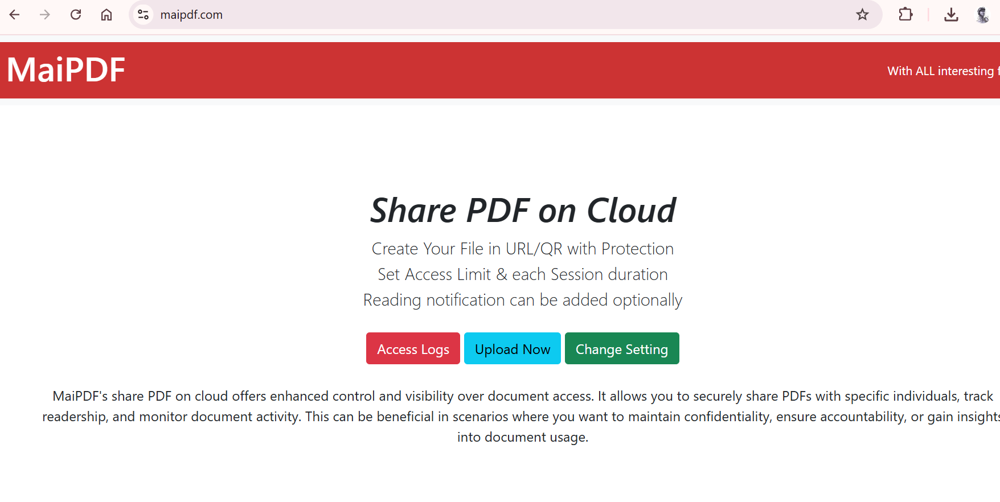

首先，访问MaiPDF官网并上传你想分享的PDF文件。平台支持上传各种大小的PDF文件，无需担心文件损坏或格式问题。
- 点击“上传PDF”按钮，选择文件并上传。
- 等待文件上传完成，确保文件无误。

快速、便捷地分享你的PDF文件，让朋友和同事轻松浏览！
假设你是一名设计师，需要与客户分享一个大尺寸的项目文档或作品集。传统的发送方式可能需要压缩文件或通过电子邮件发送，这不仅繁琐，还容易造成文件损坏。
通过MaiPDF，你只需将PDF文件上传，生成一个可以直接浏览的链接或二维码。无论客户身在何处，都能快速、安全地访问并查看你的作品。
你刚制定了一份旅行计划，包括机票、酒店预定信息等，准备分享到朋友圈。为了方便朋友们浏览而不是直接发送PDF文件，你可以通过MaiPDF将旅行计划转换为链接，并生成二维码。
这样，他们扫描二维码就能随时查看完整的旅行计划，而不需要在手机上下载繁重的PDF文件。
首先，访问MaiPDF官网并上传你想分享的PDF文件。平台支持上传各种大小的PDF文件，无需担心文件损坏或格式问题。
操作简便，只需几步即可完成文件上传。
上传完文件后，MaiPDF会为你的PDF生成一个独特的链接，你可以复制链接并直接发送给朋友，或者选择生成二维码。

将链接复制后，打开微信并进入朋友圈。粘贴链接并点击发布，大家就可以通过点击链接轻松查看文件。

通过MaiPDF，你还可以设置访问权限来限制文件的分享。例如，你可以为PDF添加密码保护，或者设置文件的查看次数，超过次数后文件无法再次查看。这样，即使链接被他人转发，你也可以有效控制文件的传播。
立即尝试上传你的PDF